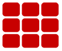
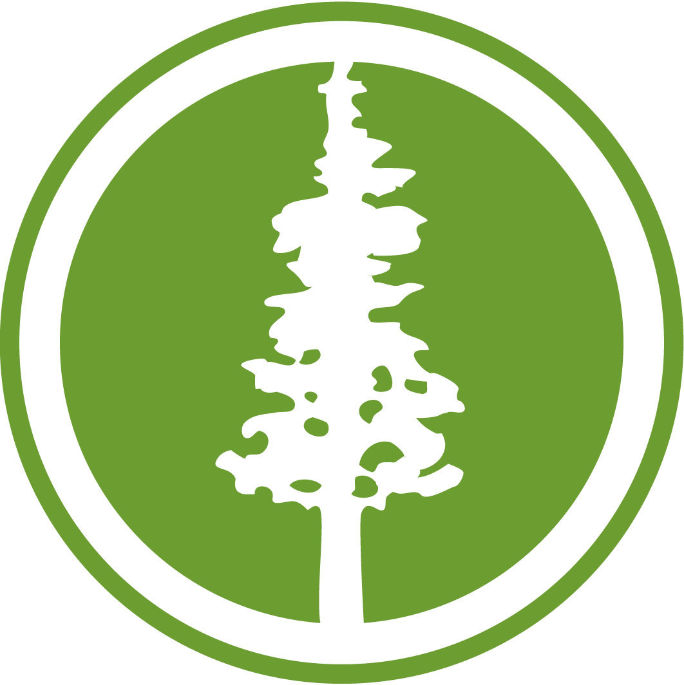

Skills
Java
HTML/CSS
PHP
JavaScript
XML/JSON/SQL
-
2015
CSE Teaching Assistant
 University of WashingtonI am currently leading Computer Lab on Tuesdays and Section on Thursdays, as well as grading weekly assignments and tests. I am mentoring CSE class students up through the graduate level.
University of WashingtonI am currently leading Computer Lab on Tuesdays and Section on Thursdays, as well as grading weekly assignments and tests. I am mentoring CSE class students up through the graduate level. -
2014

Proximic
Tech Ops Intern
I developed internal tools by enhancing a new JSON-based statistics framework. I collaborated with other programmers for coding/commenting in Java using comments in git/bash. I migrated legacy code to a new statistics framework.
-
2014

clickPA
Web/Android Developer
I co-developed and tested an Android-based Application for a student-run Event Database for teens and high schoolers called clickPA within the City of Palo Alto. I developed an Android app to parse information from public website.